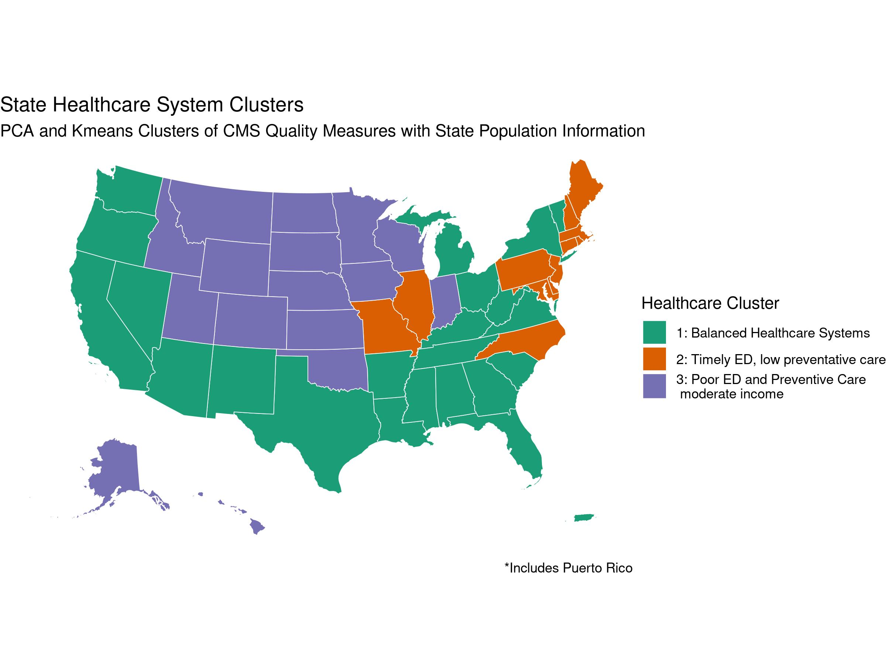

Select Products
Map of Principal Component Analysis (PCA)
TidyTuesday data on Centers for Medicare & Medicaid Services (CMS) to derive regional insights on healthcare quality in the US

Shiny Dashboard for Washington State WAVES study
*Note this dashboard runs on WebR & may take 5-10 seconds to load
#| '!! shinylive warning !!': |
#| shinylive does not work in self-contained HTML documents.
#| Please set `embed-resources: false` in your metadata.
#| standalone: true
#| code-fold: true
#| viewerHeight: 600
#load libraries
library(shiny)
library(bslib)
library(plotly)
library(ggplot2)
library(dplyr)
# 1. LOAD DATA (The Print Test is built in here)
# all_cohorts <- readRDS("assets/all_cohortsRDS.rds")
all_cohorts <- structure(list(variable = c("All", agecat = "Age Category", agecat = "Age Category", agecat = "Age Category", agecat = "Age Category", agecat = "Age Category", agecat = "Age Category", agecat = "Age Category", "Race - Dichotomized", "Race - Dichotomized", "Latina/o/x ethnicity", "Latina/o/x ethnicity", "Sex", "Sex", ind_any_pos2 = "Self-reported Positive", ind_any_pos2 = "Self-reported Positive", ind_any_pos2 = "Self-reported Positive", ind_any_pos2 = "Self-reported Positive", ind_any_pos2 = "Self-reported Positive", ind_any_pos2 = "Self-reported Positive", "All", agecat = "Age Category", agecat = "Age Category", agecat = "Age Category", agecat = "Age Category", agecat = "Age Category", agecat = "Age Category", agecat = "Age Category", "Race - Dichotomized", "Race - Dichotomized", "Latina/o/x ethnicity", "Latina/o/x ethnicity", "Sex", "Sex", ind_any_pos2_fup = "Self-reported Positive", ind_any_pos2_fup = "Self-reported Positive", ind_any_pos2_fup = "Self-reported Positive", ind_any_pos2_fup = "Self-reported Positive", ind_any_pos2_fup = "Self-reported Positive", agecat = "Age Category", agecat = "Age Category", agecat = "Age Category", agecat = "Age Category", agecat = "Age Category", agecat = "Age Category", agecat = "Age Category", "Race - Dichotomized", "Race - Dichotomized", "Latina/o/x ethnicity", "Latina/o/x ethnicity", "Sex", "Sex", ind_any_pos2 = "Self-reported Positive", ind_any_pos2 = "Self-reported Positive", ind_any_pos2 = "Self-reported Positive", ind_any_pos2 = "Self-reported Positive", ind_any_pos2 = "Self-reported Positive", ind_any_pos2 = "Self-reported Positive", "All"), value = c("all", "10-17", "18-24", "25-34", "35-44", "45-54", "55-64", "65-85", "Non-White/Caucasian or Multi-racial", "White/Caucasian Only", "Yes", "No", "Male", "Female", "Previous Positive", "Most recent Negative, no prior Positive", "Most recent Negative", "Previously tested, unknown results", "No previous test", "Unknown", "all", "10-17", "18-24", "25-34", "35-44", "45-54", "55-64", "65-85", "Non-White/Caucasian or Multi-racial", "White/Caucasian Only", "Yes", "No", "Male", "Female", "Previous Positive", "Most recent Negative", "Previously tested, unknown results", "No tests outside survey", "Unknown", "10-17", "18-24", "25-34", "35-44", "45-54", "55-64", "65-85", "Non-White/Caucasian or Multi-racial", "White/Caucasian Only", "Yes", "No", "Male", "Female", "Previous Positive", "Most recent Negative, no prior Positive", "Most recent Negative", "Previously tested, unknown results", "No previous test", "Unknown", "all"), Reactive = c(374, 38, 60, 58, 76, 63, 49, 30, 125, 249, 57, 317, 164, 210, 163, 139, 11, 2, 50, 3, 240, 18, 17, 31, 64, 36, 38, 36, 40, 200, 36, 204, 104, 136, 137, 94, 7, 2, 0, 40, 63, 61, 78, 69, 53, 41, 126, 279, 59, 346, 179, 226, 175, 139, 11, 11, 57, 6, 405), antiN_Reactive = c(15.6, 26.8, 25.2, 11, 13.6, 17.9, 15.3, 11.7, 16.5, 15.2, 20.8, 15, 16.9, 14.8, 78.7, 8.8, 12, 28.6, 10.6, 17.6, 26.6, 41.9, 35.4, 24, 35, 25, 23.9, 18.3, 23, 27.4, 42.9, 24.9, 28.4, 25.3, 86.7, 13.2, 30.4, 50, 0, 6.6, 2.8, 10, 0.3, 7.9, 2.8, 3.3, 1.3, 6.2, 3.9, 4.8, 5.1, 4.3, 81.2, 0, 0, 2.9, 3.8, 1.4, 4.7), sample_total = c(2393, 142, 238, 526, 557, 352, 321, 257, 758, 1635, 274, 2119, 971, 1421, 207, 1573, 92, 7, 472, 17, 903, 43, 48, 129, 183, 144, 159, 197, 174, 729, 84, 819, 366, 537, 158, 714, 23, 4, 4, 169, 265, 571, 647, 437, 430, 478, 843, 2153, 311, 2686, 1239, 1757, 224, 1577, 110, 305, 705, 51, 2997), cohort = structure(c(2L, 2L, 2L, 2L, 2L, 2L, 2L, 2L, 2L, 2L, 2L, 2L, 2L, 2L, 2L, 2L, 2L, 2L, 2L, 2L, 3L, 3L, 3L, 3L, 3L, 3L, 3L, 3L, 3L, 3L, 3L, 3L, 3L, 3L, 3L, 3L, 3L, 3L, 3L, 1L, 1L, 1L, 1L, 1L, 1L, 1L, 1L, 1L, 1L, 1L, 1L, 1L, 1L, 1L, 1L, 1L, 1L, 1L, 1L), .Label = c("WV1 Random", "WV1 Open Enroll", "WV2 All"), class = "factor"), LL_Reactive = c(NA, NA, NA, NA, NA, NA, NA, NA, NA, NA, NA, NA, NA, NA, NA, NA, NA, NA, NA, NA, NA, NA, NA, NA, NA, NA, NA, NA, NA, NA, NA, NA, NA, NA, NA, NA, NA, NA, NA, 0, 0, 0, 0, 0, 0, 0, 0, 2.1, 0, 1.5, 0.8, 0.8, 63.1, 0, 0, 0, 0, 0, 1.6), UL_Reactive = c(NA, NA, NA, NA, NA, NA, NA, NA, NA, NA, NA, NA, NA, NA, NA, NA, NA, NA, NA, NA, NA, NA, NA, NA, NA, NA, NA, NA, NA, NA, NA, NA, NA, NA, NA, NA, NA, NA, NA, 17.5, 7.1, 23.2, 0.8, 18.1, 7, 6.8, 3.9, 10.3, 11.7, 8.1, 9.3, 7.8, 99.3, 0, 0, 6.5, 8.2, 4.1, 7.7), antiN_Nonreactive = c(NA, NA, NA, NA, NA, NA, NA, NA, NA, NA, NA, NA, NA, NA, NA, NA, NA, NA, NA, NA, NA, NA, NA, NA, NA, NA, NA, NA, NA, NA, NA, NA, NA, NA, NA, NA, NA, NA, NA, 93.4, 97.2, 90, 99.7, 92.1, 97.2, 96.7, 98.7, 93.8, 96.1, 95.2, 94.9, 95.7, 18.8, 100, 100, 97.1, 96.2, 98.6, 95.3), LL_Nonreactive = c(NA, NA, NA, NA, NA, NA, NA, NA, NA, NA, NA, NA, NA, NA, NA, NA, NA, NA, NA, NA, NA, NA, NA, NA, NA, NA, NA, NA, NA, NA, NA, NA, NA, NA, NA, NA, NA, NA, NA, 82.5, 92.9, 76.8, 99.2, 81.9, 93, 93.2, 96.1, 89.7, 88.3, 91.9, 90.7, 92.2, 0.7, 100, 100, 93.5, 91.8, 95.9, 92.3), UL_Nonreactive = c(NA, NA, NA, NA, NA, NA, NA, NA, NA, NA, NA, NA, NA, NA, NA, NA, NA, NA, NA, NA, NA, NA, NA, NA, NA, NA, NA, NA, NA, NA, NA, NA, NA, NA, NA, NA, NA, NA, NA, 100, 100, 100, 100, 100, 100, 100, 100, 97.9, 100, 98.5, 99.2, 99.2, 36.9, 100, 100, 100, 100, 100, 98.4)), row.names = c(NA, -59L), class = c("tbl_df", "tbl", "data.frame"))
# Ensure factors are correct
all_cohorts$cohort <- factor(all_cohorts$cohort,
levels = c("WV1 Random", "WV1 Open Enroll", "WV2 All"))
pos_lvls <- c('Previous Positive', 'Most recent Negative', 'Most recent Negative, no prior Positive',
'Previously tested, unknown results', 'No previous test', "No tests outside survey", 'Unknown')
# 2. UI
ui <- fluidPage(
theme = bs_theme(version = "5", bootswatch = "flatly"),
titlePanel("COVID-19 Estimated Prevalence by Cohort"),
# Filter box sits on top spanning full horizontal width
wellPanel(
selectInput("variable", "Select Variable:", choices = unique(all_cohorts$variable), width = "100%")
),
# Plot area
plotlyOutput("plot")
)
# 3. SERVER
server <- function(input, output) {
# Reactive data processing
plot_data <- reactive({
df <- all_cohorts %>% filter(variable == input$variable)
if (input$variable == "Self-reported Positive") {
df <- df %>% mutate(value = factor(value, levels = pos_lvls))
}
df
})
output$plot <- renderPlotly({
req(plot_data())
# Standard ggplot construction
p <- ggplot(plot_data(), aes(x = cohort, y = antiN_Reactive, fill = value)) +
geom_col(position = position_dodge(0.9), color = 'black', width = 0.8) +
geom_errorbar(aes(ymin = LL_Reactive, ymax = UL_Reactive, group = value),
width = 0.2, position = position_dodge(0.9)) +
scale_fill_manual(values = c("#008995", "#D24310", "#32006E", "#FFC700", "#2C6ACE", "#925088", "#566069")) +
labs(x = NULL, y = 'Percentage', fill = input$variable) +
theme_minimal() +
theme(
axis.text.x = element_text(angle = 45, vjust = 1, hjust = 1)
)
ggplotly(p)
})
}
# 4. RUN
shinyApp(ui = ui, server = server)
Bumpchart GIF: TidyTuesday Perfume Project
